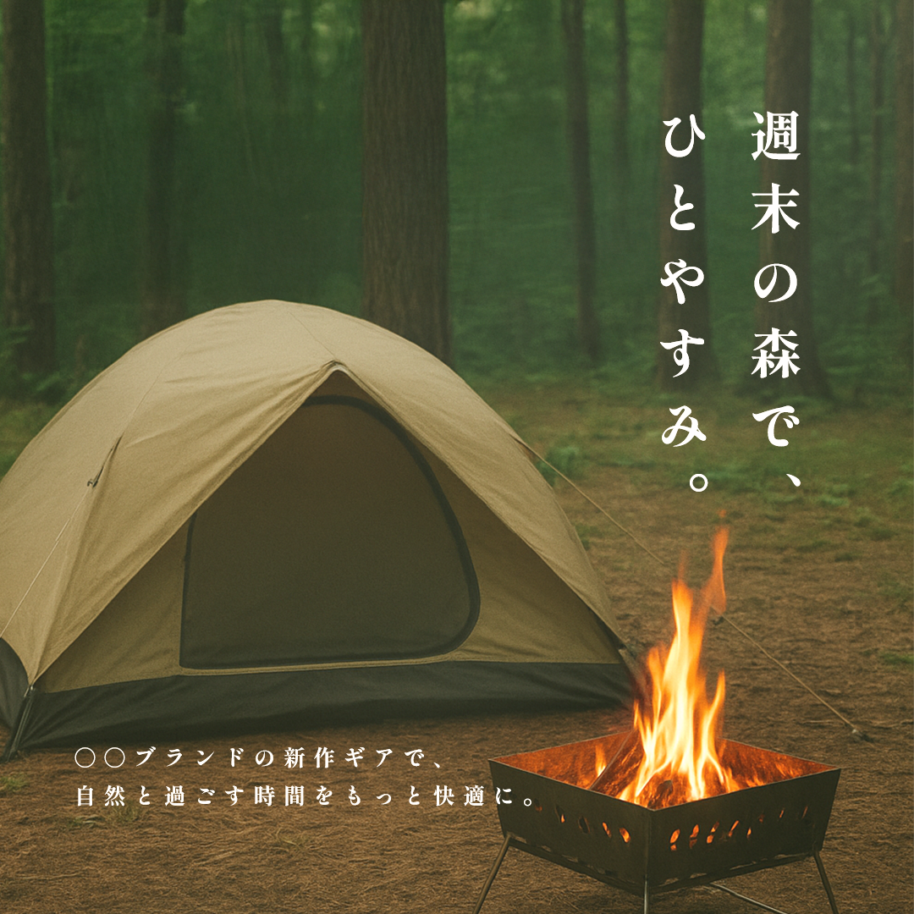

アウトドア需要が高まる中で、SNSでは「自然の中で過ごす心地よさ」を求める層が増加。
しかし、競合他社の投稿は製品のスペック訴求に偏り、
ユーザーにとって「使用イメージ」が伝わりにくい。
特に週末キャンプ層に向けて、「自然と過ごす豊かな時間」を
想起させるビジュアルとメッセージが必要だった。
テントと焚き火を配置し、「森で過ごす週末」のワンシーンを切り取ることで、使用後のライフスタイルを自然に想起させる。
縦書きで「週末の森で、ひとやすみ。」と配置し、視線を自然に誘導しながら落ち着いた雰囲気を演出。
下部に「新作ギアで、自然と過ごす時間をもっと快適に。」と追加し、世界観を壊さずに商品価値を訴求。
森のグリーンと焚き火のオレンジを活かしつつ、全体を落ち着いたトーンに調整。癒しや安心感を表現し、週末リフレッシュを想起させる。
